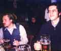
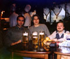
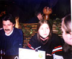

Встречи на Исходниках.ру
| |||||||||||||||
|
Это наша самая первая "запротоколированная" встреча.
Договорились мы встретиться в центре зала на М.Савеловская... Итак, в назначенное время несколько человек пристально всматривались в лица проходивших мимо людей... Наконец, один из нас не выдержал, и стал спрашивать у всех подряд - вы случайно не с Исходников? Ну, подумаешь, кто-то посторонний и покрутил в ответ пальцем у виска - что с них взять? - Ламеры :))) Зато мы "нашлись" :) Познакомились... Ждем, может еще кто-нибудь подойдет... Подходит к нам молодой парень. - Вы программисты? - Да. - С сайта? - Ага. - Ну, и я тоже! Стоим дальше, разговариваем.. - А какой у тебя ник? - Какой еще "ник"? Нету у меня ника... Выяснилось, что в том же самом месте собиралась еще одна тусовка с "чат.ру", и парень просто перепутал компании :) Итак, было нас всего шестеро - purpe (админ Исходников), olka (пурпина жена), rivitna (модератор раздела Assembler), vot (админ второго сайта - pascal.sources.ru), и еще Flex_Ferrum и Stif. Флекс-Феррум вызвался выступить в роли Сусанина и повел нас в одному ему известное кафе "Елки-палки" на Новом Арбате... Очень, кстати, недурственное заведение, весьма рекомендуем! :) | |
|
Знакомьтесь - это purpe.
Основатель и админ Исходников.Ru. | |
|
Это rivitna.
На наш вопрос, откуда взялся его странный ник, он ответил, что не смог придумать ничего другого, кроме как вывернуть наизнанку свое любимое "antivir". | |
| А это - Stif. | |
 |
Слева-направо: purpe и Flex_Ferrum.
purpe, как всегда, в своем стиле: - "...не надо "ля-ля"! да они и в подметки нам не годятся!" А Flex-у просто хорошо... Еще бы, после пары-то литровых кружечек... :) |
 |
rivitna, Stif и purpe:
- Ну что, еще по кружечке?! |
 |
vot, olka и purpe.
У vot-а всё не как у людей. Даже вместо традиционного пива потягивает какое-то итальянское вино, отщепенец! И явно что-то задумал... |